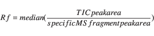

Next: Statistical analysis Up: Material and methods Previous: Glucan depolymerization
2-300 µg dried and ball-milled litter were heated to 600°C for 10 seconds in helium atmosphere. The temperature of the valve oven and the transfer line to the GC injection port were set to 250°C,a 10x split injection was applied with the injector heated to 240°C. GC Oven temperature was constant at 50 °C for 2 minutes, followed by an increase of 7°C/min to a final temperature of 260 °C, which was held for 15 minutes. The transfer line was heated to 270 °C. The MS detector was set for electron ionisation at 70 EV, the ion source was heated to 270°C. Detection was set to cycle between m/z 20 and 300 with a cycle time of 0.3 secounds.
Peaks were assignment was based on NiSt 05 MS library and comparison with reference material measured. 133 peaks were identified and selected for integration due to their hight abundance or diagnostic value. For each peak between one and four abundant mass fragments selected for high abundance and specifity were integrated (ie. Schellekens 2009). Peak areas are stated as % of the sum of all integrated peaks of a sample.
Pyrolysis products were assigned to their substances of origin by comparison to reference material, structural similarity and in accordance with literature (i.e. Ralph and Hatfield 1991, Schellekens 2009). The sum of all peak areas of the pyrolysis products of a class was calculated based on total ion current (TIC) peak areas. TIC peak areas are (1) less specific as areas of specific MS fragaments and (2) integration was not possible for all peaks a/o all samples. Therefore a MS response factor Rf was calculated for each detected substance:
|  | (2) |
Peak areas were multiplied by Rf before addition to calculate percentages of TIC area without loosing the specifity of integrating single m/z traces.
Relative peak areas in both integrations are different from weight%, but allow tracing of accumulation/depletion of these substance classes during decomposition Schellekens 2009.
lluc 2011-07-08